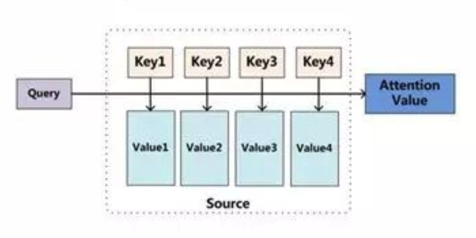
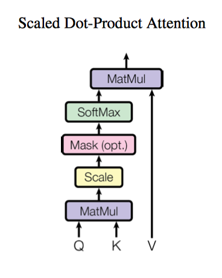
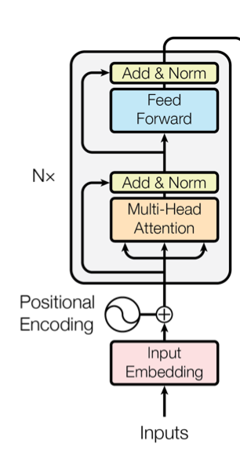
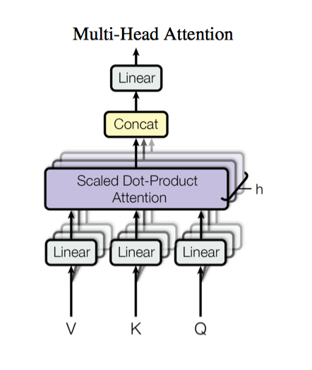
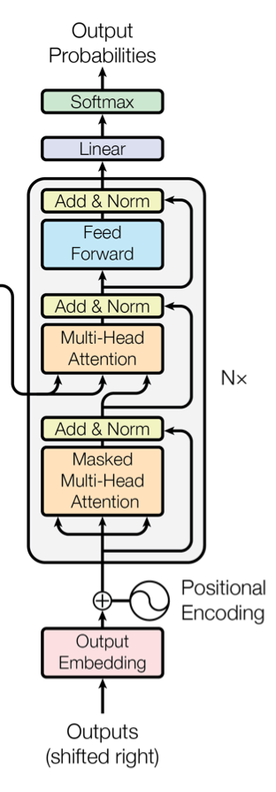

文章简介
这篇文章是Google公司谷歌大脑部门的一篇关于使用注意力机制（Attention Mechanism）来进行翻译的模型的研究，这篇文章最终发表在NIPS 2017上。整个模型还是基于 encode-decode的构架，但是attention不再和CNN以及RNN一起使用，而是单独使用。这个框架的名字叫做Transformer
Self-attention Model
自注意力模型是进两年来的热门模型，这个模型的想法挺有意思的。
attention 可以进行如下描述，一般为Query(Q)和Key(K)与Value(V)的对应的映射，其中key-value一一对应，在NLP的任务当中，通常 $K=V$, 整个attention 的结构可以看做下图。

- 模型通过比较Q和K的相似度，得到权重，通常的相似度计算方法如下
$$f(Q,K_i)=Q^TK_i$$ 点乘
$$f(Q,K_i)=Q^TWK_i$$ 权重
$$f(Q,K_i)=W[Q,K_i]$$ 拼接权重
$$f(Q,K_i)=v^T\text{tanh}(W Q+U K_i)$$ 感知器
权重的计算方法如下：
$$\alpha_i = softmax(f(Q,K))=\frac{\text{exp}(f(Q,K_i))}{\sum_j\text{exp}(f(Q,K_i))}$$ - 根据上一步计算的权重，对value值进行加权计算，通常为加权求和，得到attention向量
$$AttentionValue(Q,K,V) = \sum_i{\alpha_i V_i}$$ self-attention模型就是自己对自己求attention，即$Q=K=V$, 但是论文中对其attention权重做了缩放，除去了$K$的纬度$\sqrt{d_k}$,得到
$$Attention(Q,K,V)=\text{softmax}(\frac{QK^T}{\sqrt{d_k}})V.$$

Encoder
编码器由6个完全相同的层组成，每一个层有两个子层，一个是multi-headed attention层，另一个是一个position-wise的全连接层。在每一层中应用残差网络和正则化层的方法。残差网络就是将输入也链接到输出，使得训练更加有效。

Multi-headed Attention
论文提出了Multi-headed Attention,旨在对Q,K,V，在不同的空间的特征进行提取，其思想也比较简单，就是多做几次attention，其中每次attention的特征不共享
$$\text{MultiHead}(Q,K,V) = \text{Concat}(\text{head}_i,\cdots,\text{head}_h)$$
其中每一个$\text{head}_i$计算方法如下
$$\text{head}_i = \text{Attention}(Q W^Q_i,K W^K_i,V W^V_i)$$
论文中使用了8个heads

Position Encoding
论文输入词向量时，不仅输入了词向量的序列，也考虑了词语之间的顺序和位置。
$$PE(pos,2i)=sin(\frac{pos}{10000^{2i/d_m}}) \\
PE(pos,2i+1)=cos(\frac{pos}{10000^{2i/d_m}})$$
其中，$d_m$表示输出的维数。
这样表示的原因是，对于$PE_{pos+k}$的词向量，可以是$PE_{pos}$向量的线性组合表示，这里利用了公式:
$$\sin(\alpha+\beta)=\sin\alpha \cos\beta + \cos\alpha \sin\beta \\
\cos(\alpha+\beta)=\cos\alpha \cos\beta - \sin\alpha \sin\beta$$
最后得到的位置向量，可以和原词向量拼接，也可以和词向量相加。
Layer Normalization
Layer Normalization 和Batch Normalization 想法相似，均为降低模型的复杂程度，缓解过拟合，加快训练效率。
Decoder
解码器也是由6个完全一样的层组成，每一个网络层由编码器中的两个子层组成外，还多了一个子层，是将编码器中的多头注意力加入到解码过程中。同时，使用了Masking层，对解码到当前位置i时，对解码器输入i-1之前的信息保留，对i之后的信息进行屏蔽

Tricks
论文和代码实现，使用了一下小技巧：
- 使用了大量的dropout以增强模型的泛化能力。
drop rate选择为0.1 - 论文实验使用了8个GPU。
Experiment
Code 分析
代码为 Kyubyong的版本，源代码地址：点我
encoder 部分
1 | with tf.variable_scope("encoder"): |
multihead_attention部分
1 | def multihead_attention(queries, |
Decoder 部分
1 | # Decoder |
总结
论文一经提出就收到了巨大的关注，说明Google在该领域的领头羊作用，且2017~2018年出现大量的self-attention文章，说明其有效作用。
该论文工程性极强，可以看到论文中含有很多的tricks，这些往往影响到最后模型的效果，所以这篇文章还是很值得学习的。